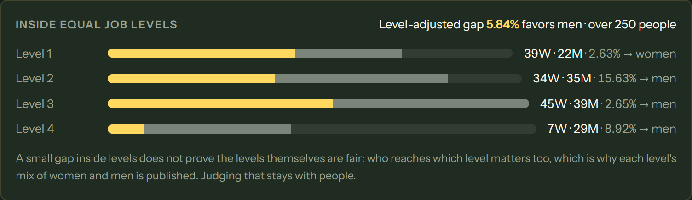

Pay-gap reports anyone can check. No salary revealed.
Wave 3: the report now covers any company up to 512 people, proven 16 at a time on Midnight. Employees check their own record with no wallet. A 32-person company is on Midnight's public testnet: 58 transactions, all three reports proven.
From 7 June 2027, EU employers must publish their gender pay gap.
250+workers: every year
150–249every three years · 100–149 from 2031
~53,000EU businesses with 250+ staff (Eurostat)
Today the report is self-declared. Nobody outside can check it without seeing everyone's salary. A report can leave people out or bend a figure, and nobody can tell.
Up to 512, proven in batches of 16, running totals sealed between batches. 250 tested.
Who pays for it?
not addressed
Measured cost structure, desk research, a pilot page, and five notes to EU people who work on this report
Less wallet friction
every step needs a wallet
Employees check their own record with no wallet, no fee (/check)
What's beyond Article 9?
two reports
A third report: the gap inside equal job levels, with each level's mix always shown
Can a newcomer follow it?
a README
Plain-language /docs, a 90-second Wave 3 film, a guided app
Equilux · Wave 303 / 12
How it works
Five people, five keys, one proof.
01
Payroll provider seals the payroll
Every row becomes a sealed code on Midnight. Salaries stay with payroll.
02
Works council checks it
Opens each sealed row against the real payroll and approves.
03
Each employee confirms
A record must match its row. An inflated salary matches nothing.
04
Employer proves the figures
All seven Article 9 figures, checked inside the circuits, 16 people at a time.
05
Anyone verifies
Read the report from the chain. Employees check their own record.
Salaries, genders, job levels and secrets are private inputs on each person's device. Only sealed codes, anonymous marks and the proven figures reach the chain.
Compact · 14 circuits · Midnight04 / 12
New in Wave 3 · scale
Any company up to 512 people. Sixteen at a time.
sealed
sealed
…
Each report is begin → batch × ⌈n/16⌉ → finish. Between batches the running totals are sealed: the chain holds only hash(totals, claim, salt), so no batch reveals what its 16 people earn. Each record is counted once per report.
Company
Batches
Transactions
32 people on preprod
2
58 (measured)
150 people
10
216
250 people tested
16
346
512 people
32
688
n + 5·⌈n/16⌉ + 16 transactions; n of them are the employees' own. 73 tests, including a 250-person company through the compiled circuits.
Contract v4 · Merkle tree depth 1005 / 12
New in Wave 3 · beyond Article 9
The gap inside equal job levels.

Each level's mix of women and men is always published. A small gap inside levels does not prove the levels themselves are fair: who reaches which level matters too, and judging that stays with people.
Live app · 250-person sample company06 / 12
Evidence · Midnight preprod
A 32-person company, proven on the public testnet.
58 transactions, blocks 3,223,740 → 3,224,162
Every batched step ran twice (2 batches of 16)
Mean gap 9.50% · median 3.40% · level-adjusted 9.05%
32 of 32 rows checked by the council and confirmed by their employee
0 salaries on chain
Contract 7b4e8bab…2051021f · every tx in contract/preprod/deployment-v4.json
equilux-lac.vercel.app/verify07 / 12
New in Wave 3 · no wallet
Employees check their own record from a payslip.
My row was committed, the council checked it, I confirmed it, I was counted once in each report
What women and men in my group earn (Article 7)
No wallet, no fee. Details stay in the page; the sealed codes are recomputed by the compiled contract
Change the salary by €100: no row matches
equilux-lac.vercel.app/check · runs against the preprod contract08 / 12
Commercial relevance
Where Equilux stands, stated plainly.
Live product
The whole report runs in the browser, nothing to install. /verify and /check read the real chain. Docs at /docs.
Users: early
No company uses or pays for it yet. Free pilots are open, and visits are counted anonymously so the numbers we report are real, even small.
Going to the buyers
Five notes to EU people who already work on this report: works-council trainers, an equal-pay consultancy, a pay-transparency software maker, a fair-pay certifier.
Every reply goes into the submission as it is, including "no", and including silence.
equilux-lac.vercel.app/#pilot09 / 12
Business model · a plan to test
The employer pays, per employee, through the tools it already uses.
1 · Software partners
Pay-transparency and payroll software already make the report. Equilux adds proof it covers the whole payroll; they resell it.
2 · Legal risk
In a dispute the employer must prove it did not discriminate (Art. 18). A proven report is evidence a spreadsheet is not.
3 · Councils & certifiers
Works councils ask for a report they can check; fair-pay certifiers back their certificate with proof. They create demand.
Why per employee per year: the work grows with headcount, almost one transaction per person. No price is set: mainnet fees are unknown and no buyer has been asked yet. Pay-equity tools (Syndio, Trusaic, Figures) analyse pay; none makes the report checkable without showing salaries, so Equilux sits beside them.
Research: docs/who-pays.md10 / 12
What we learned · what would help
Taking it toward the market.
Learned
Cost grows with headcount. Wallets are the adoption barrier, so we split checking (walletless now) from enrolling. Midnight's preprod indexer closed mid-Buildathon: moved to Blockfrost in a week. A 14-circuit contract doesn't deploy in one block: split it.
Challenges
Reaching HR buyers with no network yet. Walletless enrollment needs an always-on synced wallet that pays fees (a cold preprod sync took 2.5 hours). Mainnet fees unknown.
How Midnight can help
Fee sponsorship, so employers pay every employee's fee. An introduction to one HR or payroll partner. A server-side wallet and hosted proving a relayer can rely on.